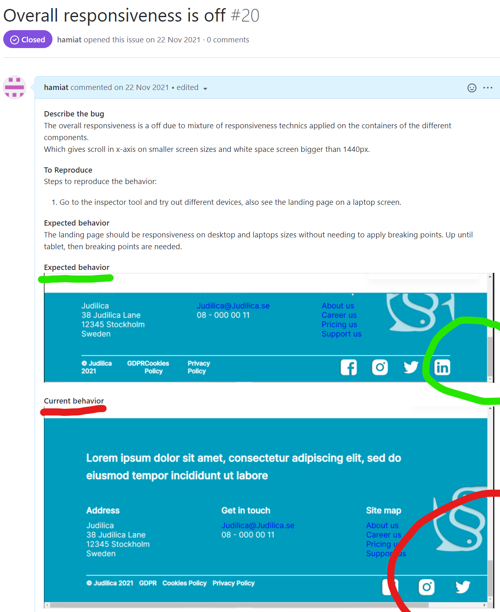

Kanban board

During the fourth course period I had an internship at Judilica, a start-up that develops digital tools for legal work (mainly). The internship was fully remote and lasted for six months, during which I and a fellow intern had the task of creating the company's landing page from design to deployment (CI/CD). The frontend technologies that I got to learn more about and work with during the internship are Next.js, React, TypeScript and Sass.
Judilica as a company is one that aim to work in an agile fashion. This I noticed from the very start at our introduction meeting with the team. The online meeting started off with a small team development session, during which I was able to get to know and connect with the entire team. In regards to the five stages of group development (posited by Bruce Tuckman), this session took the new team constellation from forming to norming. This was really good because even through I was mainly in contact with our mentor, I still felt comfortable reaching out the other members of the team when it was necessary throughout the internship.
As the structure for the overall planning was already in place, it easy for me to dive into the project and for us to begin with planning phase. The entire team collaborated in Notion and we were assigned our own workspace for the landing page which we were responsible of populating and maintaining. Below is a picture from the kanban board that I and the fellow intern created and maintained throughout the internship. The purpose of the kanban board was to help visualize work and maximize efficiency (flow). During the design phase we created the different tasks directly in notion, during the implementation phase the tasks were generated from our Github issues.
Kanban board
The Scrum methodology was applied throughout the project, we worked in iterations (weekly sprints). We started of each week by reviewing our backlog and discussing and deciding on the features that were to be implemented for the week (sprint planning and sprint backlog). Throughout the week and as we worked on the project we had daily stand-ups. At the end of each week we would have an increment during which we presented the work that had been carried out to our mentor and received feedback, which we would review at the start on the following week (sprint review and retrospective).
An agile concept that I had the opportunity to learn more and work with during the internship continuous integration (CI) and continuous deployment (CD), using Github and Vercel. Below is an image from our slack channel of automated messages from Vercel with two deployments that were made by me.
Slack board with automated CI/CD messages

I started off with creating a new branch (normally from the main branch) for the feature that I was going to develop. This was required for all new features and changes and enabled for a more manage way to conduct unit testing during the implementation and before the integration (test driven development). Once I was done developing the first iteration of the feature, I would push it to our remote repository and create a pull request. My mentor would then review the code (static testing) and then share feedback on what needed/could be improved. The process would then repeat until the pull request was approved and ready to merge with the main branch. Before a pull request could be merged with main, it had pass a few pull request checks - the most important being a successful deployment of the branch by its own. Once all the checks were passed and conflicts resolved between the feature's branch and the main branch, the branch was ready to me merged with main.
I also learned that whilst working with CI/CD, it was wise to run a build test locally to amend any build issues and errors before pushing the code. As well as configure auto formatting to avoid running into unnecessary conflicts, in particularly when working a project with multiple developer.
A pull request that I created

Code review and feedback

A successful local build

❇ Accessibility Guidelines (WCAG), in particularly when designing the landing page. Things such as checking the color contrast of the buttons with a color checking tool and increasing the font weight on smaller text to increase the accessibility visually. When working with the different animations on the page, I also took in consideration not to go overboard with the different effects for the same purpose.
❇ TypeScript (instead of JavaScript) which I consider to be a method of quality assurance when developing as it helps catch mistakes early through a type system and makes debugging easier.
TypeScript implementation

The landing page
One of the things that I found rewarding when it came to my internship was the opportunity to create the landing page from scratch and have responsibility for the entire development. This meant that I got the chance to choose work and project methodology, as well as make independent decisions about planning and work according to requirement specifications set by our mentor (our stakeholder). Below are a few occasions in regards this course goal.
Starting off I collaborated with my fellow intern to create backlog activities for the design process. The main activities that we planned and carried out were wire-framing, loFi and hiFi prototyping. The wire-framing we collaborated on and created together as we need to be on the same page when it came to which features were to be included on the landing page. The features that we decided on were based on the requirements in the project specification for the landing page, which we had received at the beginning of the project.
Wire-frame
After receiving approval from our stakeholder that the wire-frame met requirement (mainly that the required features and elements were included in the design), we decided to work individually on the loFi prototypes. This in order to provide our stakeholders with different design options and for us to gain a sense of what appealed to them visually. This helped us when it came to hiFi prototyping as the loFi design that they had settled for gave a good idea of what design style appealed to the stakeholders.
loFi prototype
hiFi prototype
Aside from the required features and elements in the project specification, the process requirements of the project was also specified in the project specification. Mainly deciding and diving everyday operations/work methods with an agile approach, as well as using a kanban board (in notion). When developing I utilized Github issues to create requirement specifications for both new features that I implemented as well as bug fixes. The issues were connected to our kanban board in notion.
Below is a screenshot of an issue that I created for correcting the overall responsiveness of the desktop version. In the issue I described the problem, how to reproduce it and then show the expected behavior vs current behavior. I then solved the issue at hand and created a pull request with the solutions that I used to solve the problem. Followed by merging the branch with the main branch once the pull request had been approved. For document purposes the issue I linked to the pull request.
Github Issue #20
Pull request for issue #20

During this internship I was fortunate to be assigned a fellow internship buddy who I collaborated with on the project. We worked together from design to deployment (CI), which meant that we had to communicate a lot. Both regarding the work itself but also how we wanted to work together in able to end the internship feeling satisfied with our efforts. For both of us this meant delivering a final product that our stakeholders would be happy with but also leave feeling like we learned something.
As the internship was fully remote and as we had to divide some of the tasks in able to work more effectively, I felt that it was important for us to maintain a good culture and practice the "trust and openness spiral". Due to freedom, but also responsibility that came with having such a flexible workspace, I made sure to communicate whenever I had hindrances (those related to work but also personal ones) that would affect my work. This was we were able to adjust our weekly sprint accordingly. A tool that really helped us with this was having daily stand-ups, during which we could adjust the plans for the day accordingly if needed.
For the purpose of collaborating a number of tools were used. Kindly see below:
Figma for the design phase, which was great at it offers the ability for multiple users to work in the same document. This was in particularly helpful as we were able to get and received feedback visually was well, rather than only explaining our feedback with words.
*Figma pic
Discord & Google meets was used for our daily stand-up and communication, both tools great because they are free to use.
*Discord Pic
VSC live-share We used to for pair-programming. In the beginning of the implementation phase, it was very important for us to work closely together as to ensure that we both were on board regarding the tasks at hand. We started off with header and implemented it together before dividing and individually working the remaining sections of the page. I think that this helped us synchronize more as progressed with the project, as we have agreed on the structure together in the beginning.
*VSC live-share
Github For the purpose of collaborating during the implementation phase, we also used Github a lot for version control.
*Github
In the beginning of the project this was particularly important as our stakeholders did not have any concrete ideas for how they wanted the landing page to look like. They wanted to appeal to a broad audience, however they had no ideas regarding the design itself. This meant that I and my internship buddy had to design in iterations and ask for feedback after each step (wire-framing, loFi & hiFi ). This also meant that we had to communicate in ways that were empathetic, and remind the stakeholder that our job was to support their vision and not the other way around. As the stakeholders also had access to our Figma files, they were able to follow the work that we were doing in real-time and come with relevant feedback as we were working (did not have to wait until our next meeting). I believed that practicing having transparency in this fashion helped strengthen the trust between us and the stakeholders.
An important part of the internship for me was learning how to work and communicate effectively. As our mentor had other obligations, I felt that it was important to be mindful of our exchanges and how often they happened. This gave me the opportunity to work more independently. As demonstrated in on how I worked with "overall responsiveness" issue in K5, where I created the issue and implemented a solution before asking what solution they preferred in the pull request and its review. As they were happy with and approved the solution presented, I only needed to have that one exchange regarding this bug.
During the implementation phase I made sure to openly communicate with our mentor whenever I ran into issues that I felt like were taking too long to solve or required their decisions-making for the progression of the project. At times I would inform our stakeholders that the task at hand required me to acquire some more knowledge either through their help directly or by taking an online course. Other times I would schedule a meeting with them for more in depth meeting regarding the issue at hand.
Below are some snippets of the communication between me and our stakeholders for the purpose of this course goal.
Code review: I specifically asked my mentor to share his feedback openly and without holding back as I wanted to. This was really helpful as I was able to received feedback on my coding style and advice on how to write cleaner code.